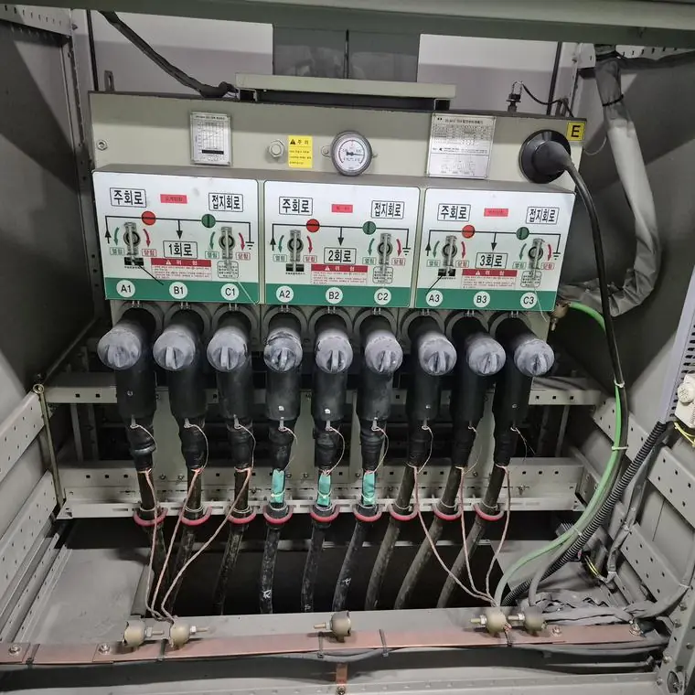
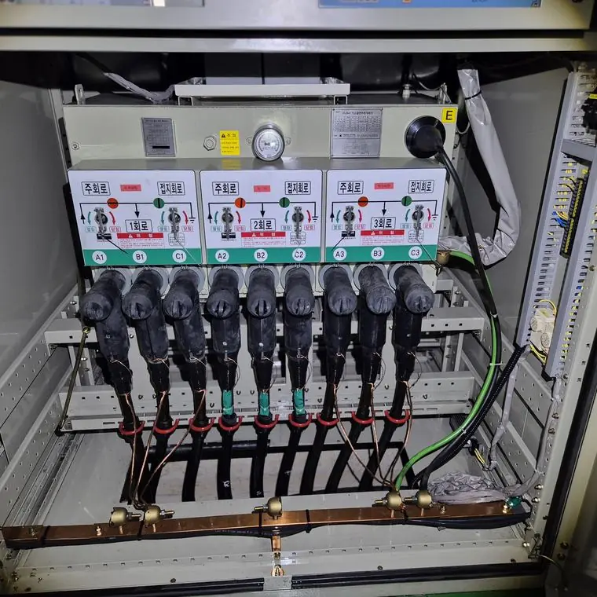

병원·학교 전기실은 어떻게 청소하나요?
최종 수정 2026-11-09
병원, 학교, 공공시설은 정전의 영향이 커서 일정 조율이 중요합니다. 방학, 공휴일, 야간에 맞춰 작업이 가능한지 확인하고, 무정전 방식이 적용 가능한지 업체와 상담하세요.
고려할 점
- 정전이 어려운 구역 확인
- 작업 가능한 시간대
- 출입과 안전 절차
- 전후 기록 사진
작업 전

작업 후

방식 선택
정전이 가능하면 방식이 늘고, 어렵다면 무정전 가능 여부를 현장 확인합니다.
안전
전기설비를 직접 물이나 일반 세제로 청소하는 것은 감전·단락 위험이 있어 권하지 않습니다. 반드시 전문 업체와 전기안전관리자에게 먼저 확인하세요.
자주 묻는 질문
공공시설도 견적을 받을 수 있나요?
네, 규모와 조건을 알려 주시면 상담합니다.
기록을 받을 수 있나요?
전후 사진 기록을 요청할 수 있습니다.
설비 사진과 정보를 남기시면 확인 후 견적을 안내해 드립니다.
무료 견적 문의하기이 글은 시공 업체가 공개한 자료와 일반적인 전기설비 관리 상식을 바탕으로 작성했습니다. 설비별 적용 여부와 결과는 현장 확인 후 달라질 수 있습니다.